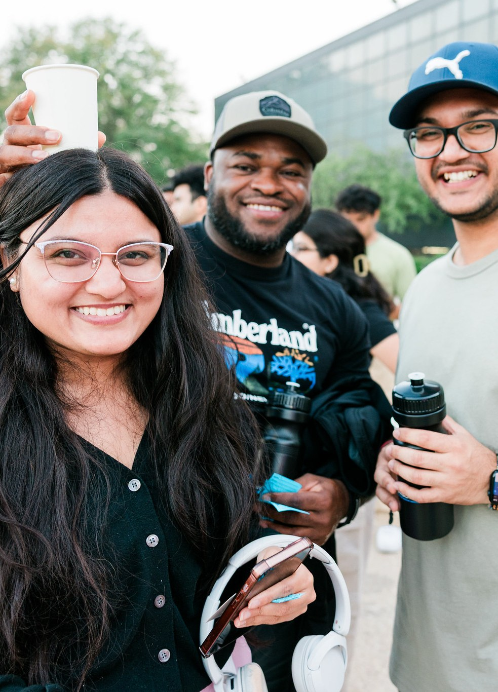
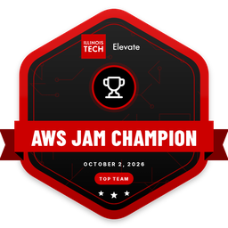
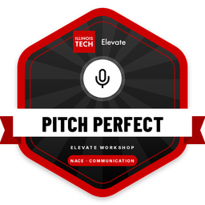
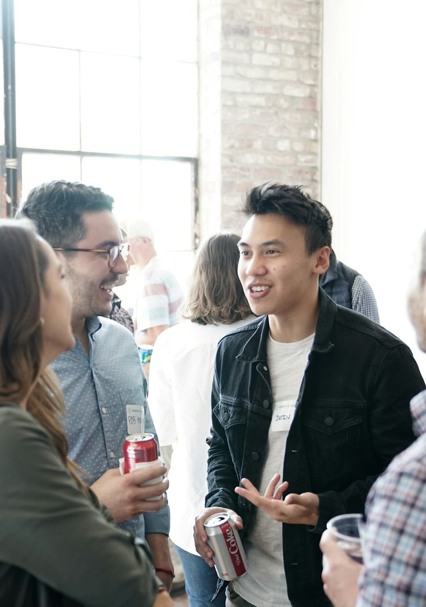

Your
career-readiness
pathway
From enrollment through employment.
elevate.iit.edu
WHAT IS ELEVATE?
Elevate is Illinois Tech’s career-readiness pathway.
From enrollment through employment. Opt-in, built to scale globally, with 24/7 support on the Elevate Portal for students in any country.
Explore careers early
Build skills throughout every year
Prove it with skill badges on a portable transcript and portfolio-ready projects
Ready for today’s industry and tomorrow’s. The skills employers ask for now, and in the next 5–10 years.


YOU’RE ALREADY DOING IT
Elevate counts what you already do.
1,169
students have taken part in at least one Elevate activity, 580 of them in the four Elevate cohorts
Going to a career fair
Attending an employer info session
Joining or leading a student org
Working on research or a project team
Entering a competition or hackathon
Landing an internship
Do it, reflect on it, earn the badge.
WHO IT’S FOR
Wherever you start, Elevate meets you there.
FIRST-YEAR & CONTINUING
Elevate participants
Your plan, your coach, your proof, year after year.
Start: Finish orientation on Canvas, then book your Elevate Success Coach on 312.
NEW TO ILLINOIS TECH
Transfer students
Your past counts. You don’t start over.
Start: Join the Transfer Students channel and ask about the cohort.
STILL DECIDING
Not yet in Elevate
Every workshop, event and coach is already open to you.
Start: Visit an info session or the Elevate table at The Bridge.
MASTER’S & PHD
Graduate students
Coaching, employers, and free AWS and quantum training.
Start: Book a career coach on Handshake.
ONCE A SCARLET HAWK
Alumni
Support through your first job, then the chance to lift the next Scarlet Hawk.
Start: Stay connected and mentor current students.
Commuting, working, playing a sport, living abroad or caring for family?
Every path has flexible, virtual options.
YEAR BY YEAR
Each year asks a little more.
YEAR 1
Exposure
Orientation, a coach check-in and a 3-hour experience in your field.
YEAR 2
Engagement
A 10-hour hands-on project or Braven BRVN 200, plus 2 electives.
YEAR 3
Accountability
40 supervised hours, a workshop or conference, plus 2 electives.
YEAR 4
Upskilling
40+ hours of upskilling and an early job search, plus 2 electives.
YEAR 5
Upskilling 2.0
Year 4 again, for five-year degrees like B.Arch.
Every year starts with an Elevate Success Coach check-in.
THE ELEVATE PORTAL
Thousands of opportunities. One portal.
elevate.iit.edu brings together 19 primary experience areas across multiple disciplines, the Elevate Electives & Ideas Catalogue, an events calendar and career guides.
Thousands of combinations for career readiness and development, backed by reputable sources and vetted by Career Services & Experiential Learning.
PROOF YOU CAN SHOW · AS OF FALL 2026
90
badges you can earn on 312, live now.
Every badge lands on a portable co-curricular transcript, mapped to eight frameworks employers and educators recognize.
NACE
WEF
CASEL
P21
AAC&U HIPs
Kolb
O*NET
Employability Skills
2,000
Elevate badges awarded
245
students holding badges
498
students signed on
Badge figures as of Fall 2026, from 312 data. Figures are approximate.
BEYOND THE FOUNDATIONS · AS OF FALL 2026
A selection of badges students earned.
89 students
Global Citizen
Completed an international experience or a cross-cultural project, such as Study Away.
86 students
Professional Relationship Builder
Built a professional network and kept up a mentorship relationship.
30 students
Job Search Portfolio Strategist
Finished a full set of career materials and ran a job search plan.
7 students
Entrepreneurship Champion
Launched an approved business venture or social enterprise.


A few of the badges students can earn on 312, including the new Stuart C-Suite series.
Faculty who support Elevate can earn badges too, such as Learning Innovation Champion and Experiential Design Champion.
ONE STUDENT, MANY BADGES
~8
badges per badge holder, on average
- Year 1 First-Year Foundation Builder
- Year 2 Global Citizen
- Year 2 Professional Relationship Builder
- Year 2 Sophomore Success Achiever
- Year 3 Job Search Portfolio Strategist
Illustrative path. Counts as of Fall 2026.
YOU’RE NEVER ON YOUR OWN
Unlimited personalized mentorship, from enrollment to your first job.
High-level career and experiential learning guidance, at Illinois Tech and beyond.
Elevate Success Coach
Your guide through the pathway, with a check-in at least once a year.
Peer Career Coaches
Walk in: MTCC 106, Monday–Friday, 10 a.m.–4 p.m.
Career coaches
Book a one-on-one appointment through Handshake.
AI Career Coach
Get help anytime, day or night, on elevate.iit.edu.
TERMS AND CONDITIONS
Your commitment, and Illinois Tech’s.
What students commit to
- Sign in Year One, then meet an Elevate Success Coach right away
- Complete Elevate Orientation and a financial literacy workshop
- Keep a 3.0 GPA and good academic and financial standing
- Meet each year’s requirements, plus two electives a year from Year Two
- Complete a co-op and internship prep course, such as Braven BRVN 200
- Graduate within 8 to 10 semesters
THE ELEVATE COMMITMENT
Finish every requirement and, if you don’t have a job or graduate school offer within six months of graduating, you may be eligible for up to 9 credit hours of select graduate courses tuition-free, or one term of free upskilling or a digital apprenticeship.
Available within one year of graduation, subject to additional factors set by Illinois Tech.
Read the full Terms and Conditions

WHAT YOU WALK AWAY WITH
Ready for the job market before graduation day.
Rigorous, personalized career development, built alongside your renowned Illinois Tech degree.
Optimized application materials
- A polished resume
- A strong LinkedIn profile
- A complete Handshake profile
- A cover letter you can adapt
- A portfolio of your work
- Each one reviewed and optimized with Career Services
Proof employers trust
- Workforce training on top of your degree
- Free industry certifications, including AWS
- Real experience, from shadows to internships
- Badges on a co-curricular transcript
Build and cultivate the ultimate professional network. Connect with your industry early and grow relationships with coaches, mentors, alumni and employers who know your work.
GET STARTED
Your future, elevated. Start today.
- Visit and read the Elevate site
- Sign in to 312 to see your assigned checklist and begin
- Read and sign the Terms and Conditions
- Meet your Elevate Success Coach
- Pick your first experience
- Earn your first badge
- Build experiences and your professional network
- Command the job market
elevate@illinoistech.edu